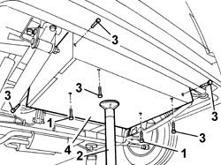

1042E61 SUPPLEMENTARY CNG CYLINDER UNIT PROTECTION SEAL - R.R.
- Path
- Procedures > 10 ENGINE UNIT > 1042 METHANE GAS CANNISTER AND TUBES > 1042E GAS CANNISTER BRACKETS AND PROTECTORS > 1042E61 SUPPLEMENTARY CNG CYLINDER UNIT PROTECTION SEAL - R.R.
- Kind
- repair procedure (removal / refitting; the operation number is the code)
- Applies to
- engines: 2.0 16V; all production periods
- Interactive page
- https://sloeber94.github.io/elrnDB-fDct/en/#/244002612
Applies to: engines: 2.0 16V; all production periods
 Removing
Removing
 Refitting
RefittingPosition the vehicle on the lift.
Raise the vehicle.
1. Undo the centre retaining bolts.
2. Position a suitable hydraulic lift to support the canister assembly guard.
3. Undo the remaining fixing bolts.
4. Working on the hydraulic lift, lower the canister guard and remove it.

Applies to: engines: 2.0 16V; all production periods
Refitting
RemovingPosition the canister guard working on the hydraulic lift.
Tighten the side fixing bolts.
Remove the hydraulic lift.
Tighten the centre fixing bolts.
Lower the lift.
Remove the vehicle from the lift.